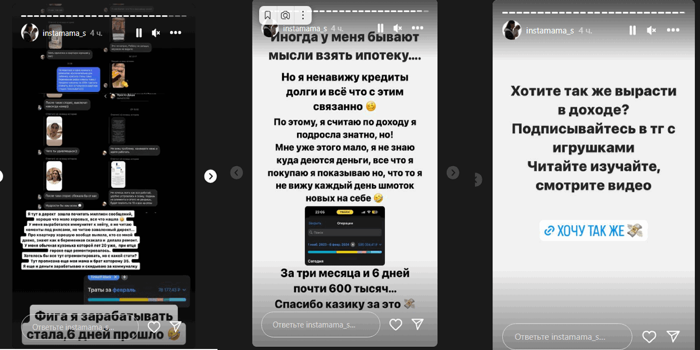
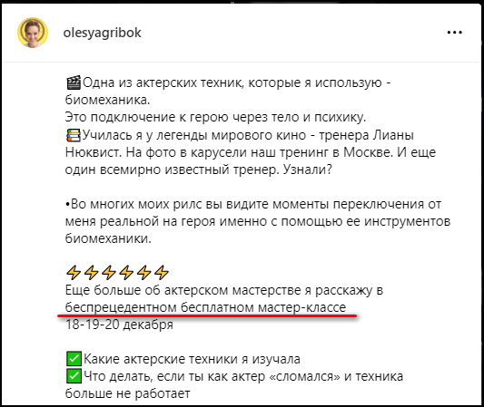

Прогревы в Инстаграме: первый запуск и эффективность сценариев

Прогрев аудитории в Инстаграме* - термин, понятный не всем. В основном, его используют маркетологи, блогеры и их менеджеры. Событие пригодится перед запуском конкурсов, интенсивов, курсов.
Что такое прогрев и когда его используют в Инстаграме*
Выражаясь проще: прогрев – это подготовка и сбор целевой аудитории перед масштабным событием. Блогер делает публикации с кликбейтными названиями и завлекает аудиторию неоконченными рассказами, привлекательными историями успеха. И само событие будет запущено после того, как соберется нужное количество участников и заинтересованных лиц.
При прогреве целевую аудиторию обычно делят на 2: половина из заинтересованных будет просто наблюдать.
При большом объеме лояльных подписчиков – показатель участия может достигать 80%. Приведем пример: блогер хочет запустить свой курс, но не знает сколько участников будет. Тогда запускают прогрев в Сторис – делают публикации с тематикой: «Я не знал, что так получится», «Мои ученики уже достигли успеха», «Раньше я работал за 20 тысяч в месяц и даже не мечтал о других вариантах». Прогрев обычно держат до недели, начиная с менее агрессивных вариантов и заканчивая самой рекламой к событию.
Кому пригодится прогрев:
- экспертам, планирующим запустить собственные обучающие курсы;
- владельцам магазинов перед масштабными скидками;
- блогерам для выпуска чек-листов и гайдов;
- начинающим авторам, чтобы привлечь внимание к своей странице.
Так, начинающий блогер сможет собрать первую аудиторию, но с такой стратегией нужно быть осторожным: подписчикам не нравится, когда «раздуют из мухи слона» уже на старте и вовлеченность может упасть.
Разновидности прогревов
Перед запуском нужно познакомиться со сценариями прогревов в Инстаграме*, которые уже были опробованы другими авторами и показали максимальную эффективность. Виды прогревов:
- «лояльный». Без прямого призыва к совершению действий. Используют сторителлиг, чтобы покупатель проникся ситуацией и сам решил, как поступить;
- активные. Обычно непродолжительные и направлены на прямую продажу товаров или услуг. В рекламных шаблонах есть фразы «Купить» или «Оформить»;
- нативные. Покупателю показывают примеры взаимодействия с товаром, делятся откликами, но не рассказывают напрямую о характеристиках и преимуществах до самой покупки;
- агрессивный. Задевают «боль» аудитории, ищут способы быстро продать товар, порой через рассылки в личных сообщениях или постоянном размещении публикаций одного типа.
ТОП-6 прогревов в Инстаграм*:
- Через скандальные Stories*. Например: «Я встретил подписчика через 5 лет и он поблагодарил меня за полезные советы, которые принесли ему баснословный доход».
- Полезные материалы. Дать 30% от основной информации и пригласить подписчиков на вебинар/курс.
- Сторителлинг или интервью с сотрудником. Подходит для компаний; рассказать о карьерной лестнице одного из сотрудников и в конце пригласить к обучающим материалам;
- Через продающее мероприятие. Вначале идут завлекающие посты и Истории, после — бесплатное мероприятие и дожим аудитории.
- Без мероприятия, но с рассылкой. Полезный контентили задания для целевой аудитории.
- Без мероприятия и обучения. После рекламного видео размещают ссылку на сайт, где собирают лиды.
Автору стоит выбрать один из вариантов, подходящий под цели и бизнес. Владельцам компаний стоит присмотреться к способам, где фигурируют отзывы реальных покупателей, сотрудников.

Маркетинговые стратегии для прогревов
Чтобы прогревать аудиторию владелец страницы или его помощник должны составить план. Маркетинговая стратегия для получения наибольшего количества откликов в Инстаграм* должна состоять из:
- цели. Продажи, привлечь внимание, провести исследование по количеству заинтересованной аудитории;
- кто «средний подписчик». Провести аудит и выделить примерную ЦА на которую будет рассчитан прогрев и дальнейшие продажи;
- эффективность контента. Выбрать посты, которые заслужили наибольший отклик и на их основе сделать записи для прогрева в Сторис;
- материалы. Какой формат постов больше нравится целевой аудитории;
- длительность. Сколько будет длиться прогрев и какое количество записей нужно подготовить.
Для крупных мероприятий нужно запланировать и рекламный бюджет. Например, автор аккаунта захочет пригласить других блогеров или звезд, которые прорекламируют событие. Обычно шаблон для прогрева от популярной личности выглядит так: «Недавно я узнал, что случилось у @юзернейм. Только посмотрите на его последний пост, где все подробно описано». Маркетинговые модели, которые актуальны для прогревов:
- AIDA. Внимание – интерес – желание – действие;
- AIMDA. То же, включая дополнительный пункт: «Мотивация».
- ACCA. Внимание – восприятие аргументов – убеждение – действие.
Первый вариант используют чаще всего, как классическую модель. В его основе лежит: вовлечение клиента в любой из этапов производства, привлечение с помощью истории или через полезную информацию. При этом, у потенциального покупателя нужно вызвать желание купить продукт: провести бесплатный вебинар, дать пробный урок или показать отзывы других учеников.
Шаблоны, сценарии и визуал
Прогрев в Сторис невозможен без качественного визуала. Начинающим авторам стоит взять на заметку наиболее интересные варианты прогревов, а также их оформление. Популярный способ – короткие видео в Историях.

Где искать шаблоны и как работать с визуальной частью:- использовать приложения для монтажа. Adobe Premiere, Voicella (для добавления субтитров), InShot, CupCat;
- добавить оригинальный шрифт можно с помощью Bazart;
- просматривать публикации других блогеров, чтобы посмотреть необычные варианты, даже если у них закрытая страница;
- стикеры взаимодействий: ответы, реакции, мнения;
- делать текст крупным шрифтом, добавляя по несколько Историй на одну тему постепенно.
Сценарий для первой пробы можно взять стандартный:
- Автор делает незначительную публикацию, рассказывая историю из своего прошлого.
- Во второй Сторис продолжает рассказ, но добавляет в конце: «Недавно я нашел способ, как избежать этих трудностей».
- На следующий день добавляет Историю, где показывает работу над курсом/гайдом. Как описание: «Скоро я сделаю для вас сюрприз».
- Записывает воодушевляющую Сторис, где презентует свой будущий продукт.
- Еще одна запись с предложением записаться на бесплатный пробный урок, который будет доступен первым 100 написавшим в Директ.
- Сделать завершающую запись со ссылкой или приглашением в общий чат, где произойдет основная продажа.
Такой метод часто используют блогеры, подстраивая под тематику своего блога. Для работы с Историями не только используют фильтры, но и добавляют субтитры. Те необходимы, чтобы потенциальные клиенты, которые смотрят Сторис без звука, также знали о чем говорит блогер.
Примеры эффективных прогревов в Инстаграм*
Рассмотрим пример прогрева на странице психолога Александра Шахова (@psycholog.alexandr.shahov). Один из его шаблонов включал обратную связь, которую несложно реализовать в Инстаграме* с последними обновлениями. Какой план был:
- Сторис, где подписчикам предложили интересный контент за обратную связь: «Расскажу о 5 эффективных способах решения конфликта».
- Добавляет Историю со стикером «Вопросы».
- Собирается в следующей вопросы и мнения от подписчиков.
- Добавляет еще одну, где сам дополняет перечень ошибок.
- Размещает последнюю с кнопкой записи на курс, где предлагает подробно разобрать каждую ситуацию.
Чтобы реализовать такой прогрев, автору нужно было потратить всего один-два дня (на сбор откликов). В описанном случае, владелец блога получил ответы в течение нескольких часов.